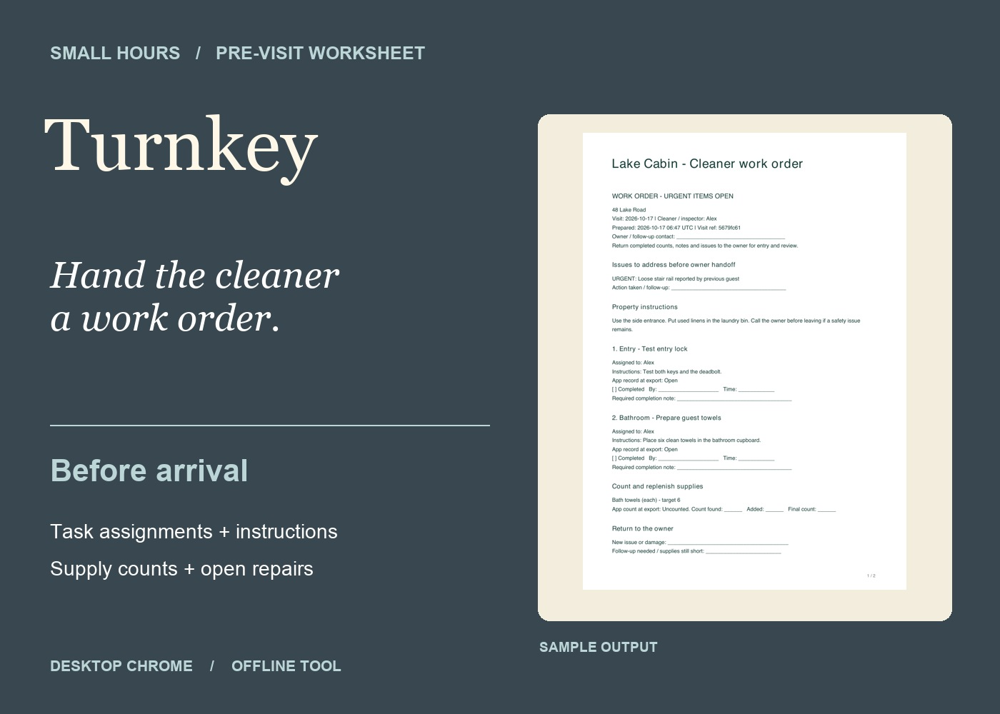

Small Hours / Product demosGive a cleaner the work order before arrival

Review assigned tasks, a known repair and spaces for final counts. The cleaner can use the sheet before the owner records a completed handoff.
Open sample work order →
Example from Turnkey 0.3.0. All job details and rates are illustrative.
View Turnkey on Payhip →